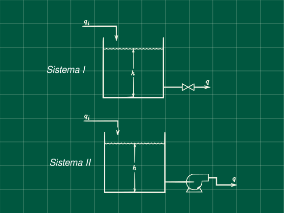
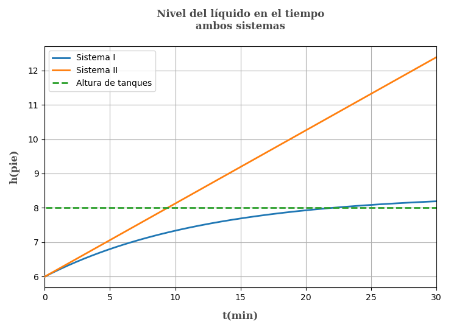

8 Dos tanques uno con una válvula y el otro con una bomba
Problema 5.9 (Process Dynamics and Control - Seborg, Edgar, M, D)

Dos tanques mostrados en la figura, cada uno tiene un diámetro de 4 pie, Para el primer sistemas la válvula tiene una resistencia linear con la ecuación q = 8.33\ h con q en (gal/min) y h en (pie). Para el segundo sistema, la variación en el nivel del líquido no afecta el caudal de salida q . Suponga que cada sistema esta inicialmente en estado estacionario con h_s = 6\ pie y q_s = 50\ gal/min. A t=0 el caudal de entrada se incrementa de 50 a 70 gal/min.
Determine para cada sistema
La función transferencia H(s)/Q(s)
La función h(t)
Los nuevos estados estacionario
Si cada tanque tiene 8 pie de altura, ¿cuál tanque rebalsa primero y cuando?
Verifique los resultado en d) graficando lo resultados
Datos
\begin{array}{rl} d = &4 pie\\ h_s= &6 pie\\ q_{is}=&50\ gal/min\\ q_i=&70\ gal/min\\ h_s=&8\ pie\\ q=&8.33\ h\ gal/min \end{array}
Estandarizamos los datos anteriores (es decir convertimos a unidades compatibles) y obtenemos el área de los tanques. (7.48 gal = 1 pie³) \begin{array}{l} A\ = \frac{\pi d^2}{4}\ =\ 12.5665\ pie^2\\ \\ q_{is}\ =50/7.48\ =\ 6.6845\ pie^3/min\\ \\ q_i\ =\ 9.3583\ pie^3/min\\ \\ q\ =\ 8.33\frac{gal}{min\cdot pie}\ h \frac{1\ pie^3}{7.48\ gal} = 1.1136\ h\\ \end{array}
Para simplificar las operaciones hagamos q=kh con k=1.1136
Derivación de la ecuación tranferencia para el primer tanque
Escribiendo las ecuaciones de balance de materia (asumiendo densidad constante) en estado transitorio y en estado estacionario:
A\frac{dh}{dt}= q_i-kh
0=q_{is}-kh_s
Restando ambas ecuaciones y pasando a variables desviación
A\frac{dH}{dt}=Q_i-kH
Aplicando la transformada de Laplace
AsH(s)=Q_i(s)-kH(s)
\frac{H(s)}{Q(s)}=\frac{1/K}{As/K+1}
Reemplazando valores conocidos
\mathbf{\frac{H(s)}{Q(s)}=\frac{0.8980}{12.2845s+1}}\space\space\space\space\textbf{... (1)}
Obteniendo la función transferencia para el segundo sistema
Planteando los balances en estado transitorio y estacionario con q_b para el caudal de la bomba
A\frac{dh}{dt}=q_i-q_b
0=q_{is}-q_b
Restando ambas ecuaciones y conviertiendo a variables desviación
A\frac{d(h-h_s)}{dt}=q_i-q_{is} A\frac{dH}{dt}=Q_i
Aplicando la transformada de Laplace y despejando la función tranferencia
AsH(s)=Q_i(s)
\frac{H(s)}{Q_i(s)}=\frac{1}{As}
Reemplazando datos conocidos
\mathbf{\frac{H(s)}{Q_i(s)}=\frac{1}{12.5664s}} \space\space\space\space\textbf{... (2)}
Respuesta de los sistema a la perturbación
Decripción de la perturbación
Q(t)= q(t)-q_s \begin{cases} q_s-q_s&\text{si } t < 0 \\ q_i-q_s &\text{si } t > 0\\ \end{cases}
Q(t)= q(t)-6.6845 \begin{cases} 0&\text{si } t < 0 \\ 9.3583-6.6845=2.6738 &\text{si } t > 0\\ \end{cases}
\begin{array}{lcr} Q(t)=2.6738u(t)&\rightarrow & Q(s)=\frac{2.6738}{s}\\ \end{array}
\mathbf{Q(s)=\frac{2.6738}{s}}
Reemplazando en la ecuación (1) Q(s)=\frac{2.6738}{s}
H(s)=\frac{2.6738\times 0.8980}{s(12.2845s+1)}
Separando en fracciones parciales y aplicando la antitransformada (Puede reemplazar de tablas directamente)
H(s)=2.4011\left(\frac{1}{s}-\frac{1}{s+1/12.2845}\right)
H(t)=2.4011(1-e^{-t/12.2845})
Recordando que H(t)=h(t)-h_s con h_s=6\ pie
h(t)=2.4011(1-e^{-t/12.2845})+6
Calculanado para que tiempo se llegará a una altura de h=8
8=2.4011(1-e^{-t/12.2845})+6
t=-12.2845ln\left(1-\frac{2}{2.4011}\right)
\mathbf{t_I=21.98\ min}
Calculando el nuevo estado estacionario para el primer sistema
h(t\to\infty)=\lim_{t\to\infty}2.4011(1-e^{-t/12.2845})+6
\mathbf{h_{sI}= 8.4011\ pie}
Para el sistema 2 reemplazando (2) Q(s)=\frac{2.6738}{s}
H(s)=\frac{2.6738}{s(12.5664s)}
Realizando la antitranformada y despejando para h(t)
H(t)=0.2128\cdot t
h(t)=0.2128t+6
El tiempo para el cual h = 8
8=0.2128t+6
\mathbf{t_{II}=9.40\ min}
Calculando el nuevo estado estacionario para el sistema II
h(t\to\infty)=\lim_{t\to\inf}0.2128t+6
\mathbf{h_{sII}=\infty}
Es decir el sistema 2 no tiene un nuevo estado estacionario y tiende al infinito.
Siendo que t_{II}<t_I determinamos que el sistema II rebalsa primero
Graficando ambos sistemas

Referencias
- Seborg, D. E.; Edgar, T. F.; Mellichamp, D. A.; Doyle, F. J. (2016). Process Dynamics and Control (4th edition). John Wiley & Sons, Inc. ISBN 978-1-119-28591-5.